Contracts & Seats
How to formalize DOE's funding relationship with a CBO/FCCN vendor in ECMS: create a Contract, break it into a Contract Period (typically a fiscal year), and define the funded Contract Seats within that period.
Overview
Once a CBO or FCCN exists in ECMS with an account and at least one site (see the Vendor & Site Setup guide), DOE still needs to formalize what it's actually paying the vendor to do. That's the job of the Contract object: it records the funding relationship between DOE and the vendor, is broken into one or more Contract Periods (typically a fiscal year), and each period is then broken into individual Contract Seats — funded enrollment slots of a specific type. This is internal, DOE-side setup work, normally done by an Operations Analyst or the newer Phase 2 Portfolio Team Member role, which exists specifically to keep contract and seat numbers accurate and validated.
This guide continues the running example from Vendor & Site Setup: Cedar Point Early Childhood Academy, whose contract, period, and seat already exist in this UAT environment. The result screenshots below show that real record; the "New" form screenshots illustrate the creation steps without actually saving a duplicate.
Steps
1Find the vendor's contracts
DO Open the CBO/FCCN's Account record (here, Cedar Point Early Childhood Academy) and scroll to its ECMS Contracts related list.
RESULT The related list shows every contract already on file for this vendor — contract name, linked site, start/end dates, amount, and contract type — with a New button to add another.
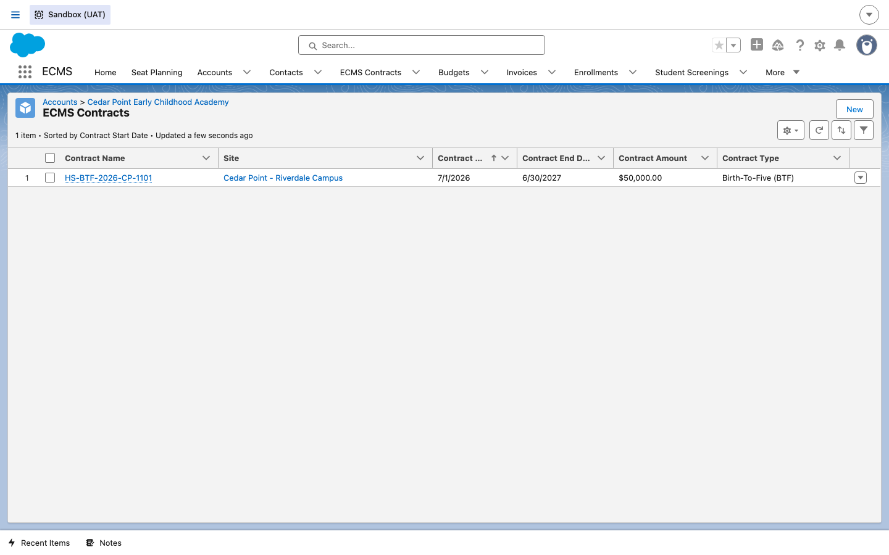
2Start a new contract
DO Click New on the related list. The Vendor lookup pre-fills to this account. Fill in Contract Name, RFP Number, Contract Start/End Date, Contract Amount, and optionally Contract Type, Program Name, and Site.
RESULT A "New ECMS Contract" form opens, already linked to the vendor, with fields for the contract's core terms and its FAMIS Contract ID.
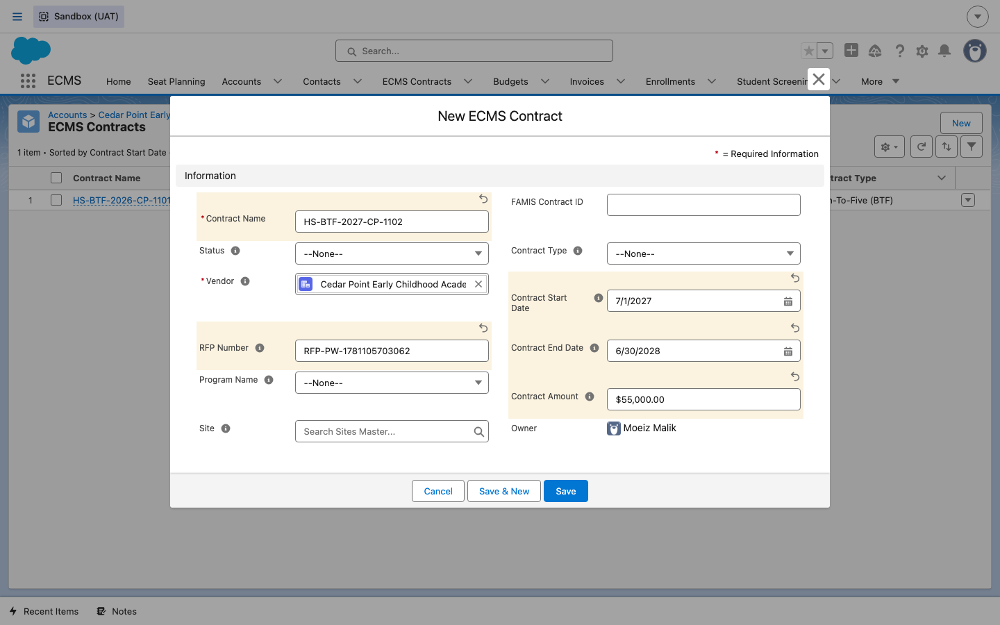
3Review the saved contract
DO Click Save.
RESULT The Contract record is created and you land on its detail page, with a status path (here, Active) and related-list quick links for Contract Periods, Budgets, Contract Authorizations, and Contract Reference Documents.
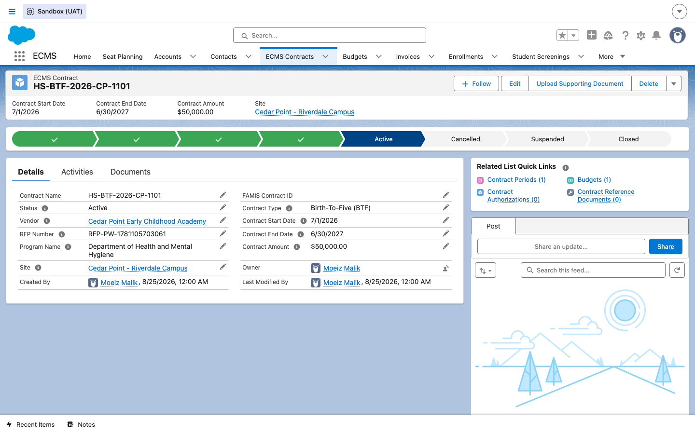
4Open the Contract Periods related list
DO From the contract's detail page, click into the Contract Periods related list (or its quick link).
RESULT The list shows every fiscal-year period defined under this contract — here, one period running 7/1/2026–6/30/2027 — with a New button to add the next one.
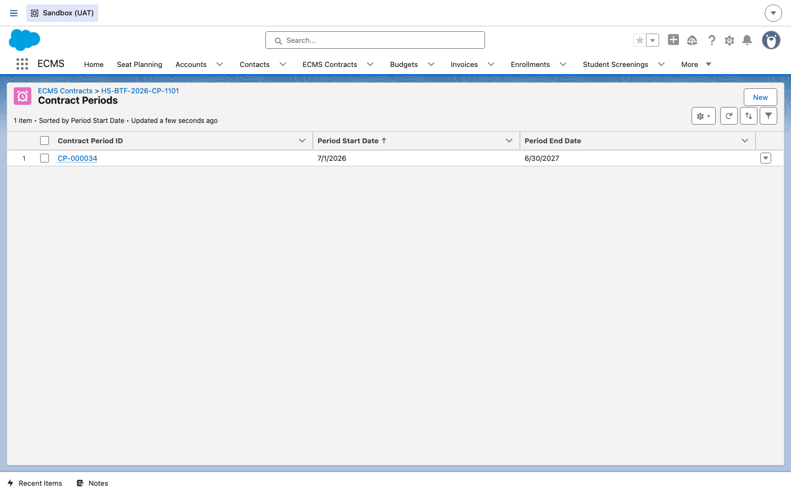
5Add a contract period
DO Click New. The Contract lookup pre-fills to the parent contract. Fill in Period Start Date, Period End Date, and Period Budget Total.
RESULT A "New Contract Period" form opens, pre-linked to the parent contract, with its own auto-numbered Contract Period ID and fields for the period's budget total and milestone dates.
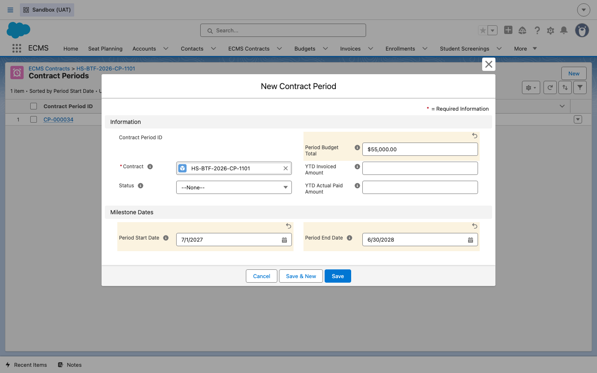
6Review the saved contract period
DO Click Save.
RESULT The Contract Period record is created, showing its Period Fiscal Year, milestone dates, and related-list quick links for Contract Seats and Budgets.
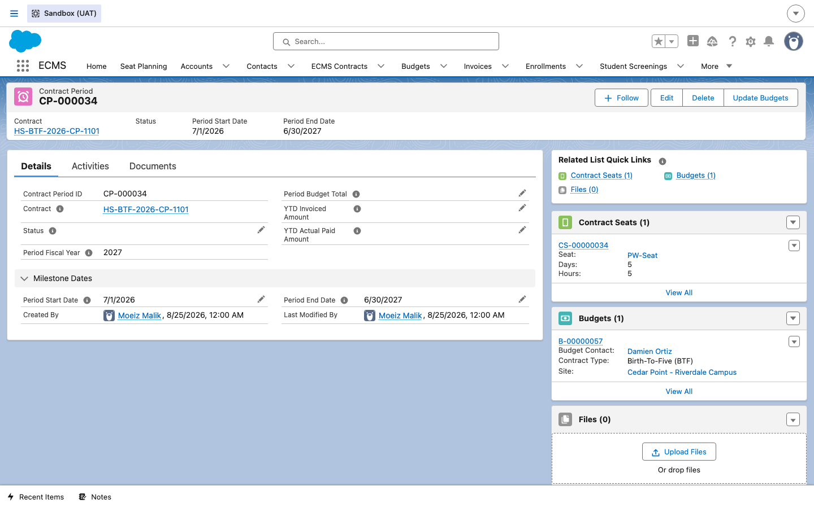
7Open the Contract Seats related list
DO From the contract period's detail page, click into the Contract Seats related list.
RESULT The list shows every funded seat type defined for this period — here, one seat linked to the PW-Seat seat type, with 20 quantity, 5 days, 5 hours, $75.00 cost per child, and $1,500.00 total funding — plus a New button.
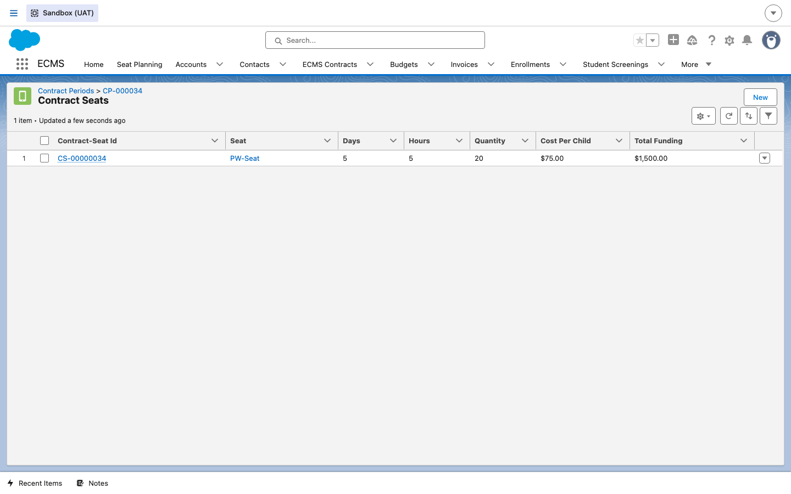
8Define a contract seat
DO Click New. The Contract Period lookup pre-fills. Use the Seat lookup to search the Seat Master catalog (e.g. "PW-Seat") and select the seat type, then fill in Quantity, Cost Per Child, Days, and Hours.
RESULT A "New Contract Seat" form opens, pre-linked to the contract period, with the chosen Seat Master record attached and the funding fields ready to fill in.
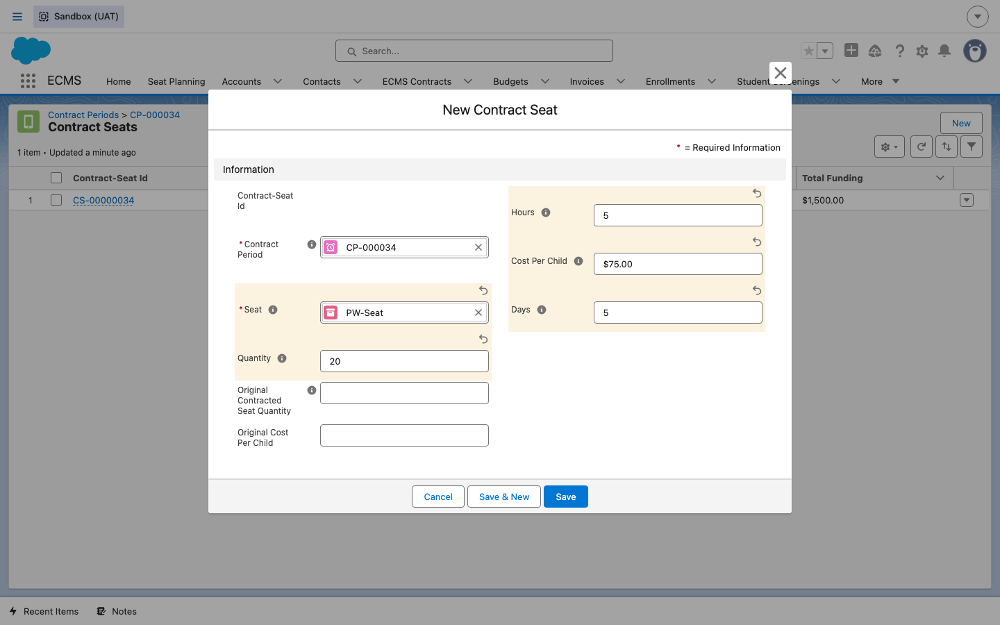
9Review the saved contract seat
DO Click Save.
RESULT The Contract Seat record is created, showing Cost Per Child, Quantity, Original Contracted Seat Quantity, the linked Seat, and the calculated Total Funding.
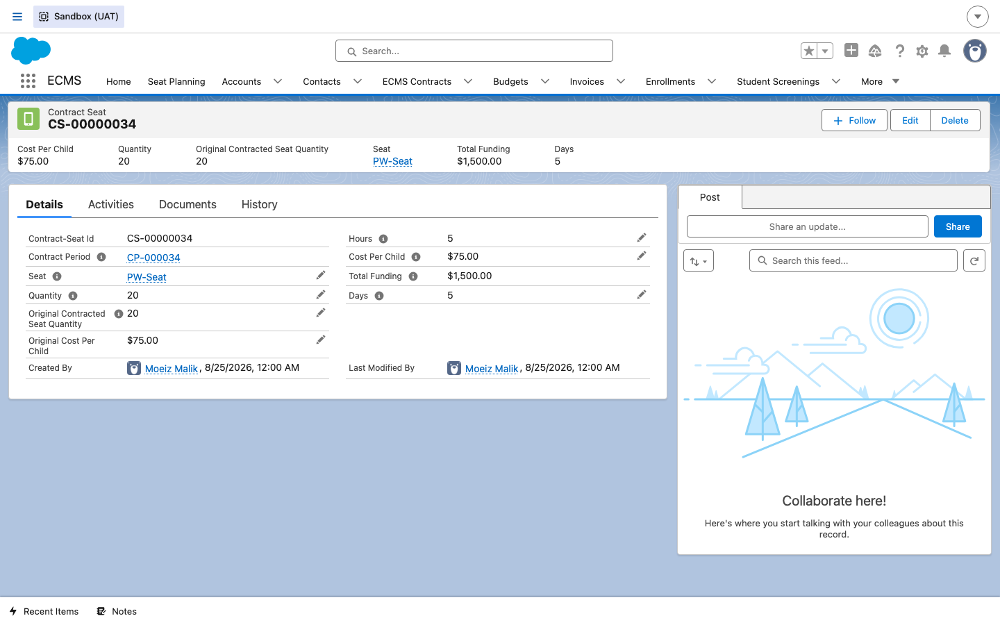
With the contract, period, and seats in place, the next step in the chain is usually enrolling children against these funded seats (see the Enrollment guide) or building the site's budget for this period.
Seat Planning: preparing the next fiscal year's dataset
The steps above walk through creating one Contract, Contract Period, and Contract Seat by hand — useful for a single new vendor or an ad-hoc correction. But per the approved BRD D04.1 (Jira DOEECMS-2183), DOE also runs an annual, org-wide process every December in which the Portfolio team drafts the entire upcoming fiscal year's seat and contract dataset, then publishes it on July 1st so it becomes the live data for the new FY. ECMS supports this with a dedicated Seat Planning app, distinct from the per-record contract/seat screens covered above.
10Find the Seat Planning tab
DO From the internal ECMS nav bar (visible from the app's Home page or any object tab), click Seat Planning.
RESULT The nav bar shows Seat Planning as its own tab, alongside Home, Accounts, ECMS Contracts, Budgets, Invoices, Enrollments, and Student Screenings — confirming it's a separate, purpose-built app rather than a related list buried under Contracts.
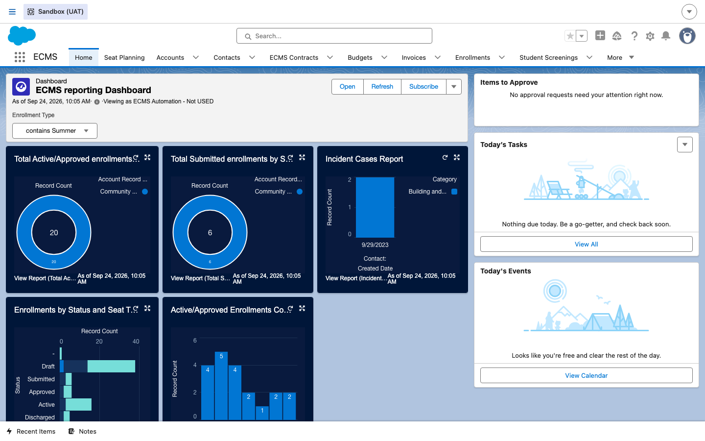
11Start or open a FY draft seat plan
DO On the Seat Planning app page, either fill in a Fiscal Year under Initiate Seat Plan and click Next to start a new one, or open an existing entry from the Draft Seat Plans list below it.
RESULT The app page is organized into an "Initiate Seat Plan" action at the top and separate list panels underneath for each dataset status. In this UAT org there is currently exactly one seat plan on file: FY2027, Status = Draft, appearing in the Draft Seat Plans list — this matches the BRD's "Start FY Seat Planning" action creating a draft dataset tagged with fiscal year, status, and creation date.
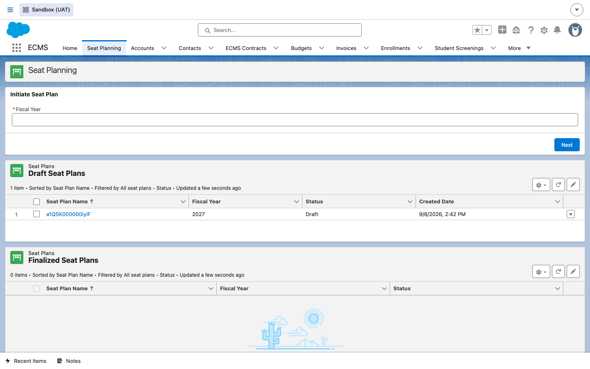
12Open the Seat Plan record and check its Status
DO Click into the FY2027 seat plan record from the Draft Seat Plans list.
RESULT The Seat Plan detail page opens, with page-header actions for Edit, Manage Seat Mapping, and Finalize Seat Plan. The Details tab on this record is minimal — just Seat Plan Name, Owner, and system audit fields — the Fiscal Year and Status values (2027 / Draft) are the columns you already saw on the list view in the previous step, rather than fields surfaced on this page's layout.
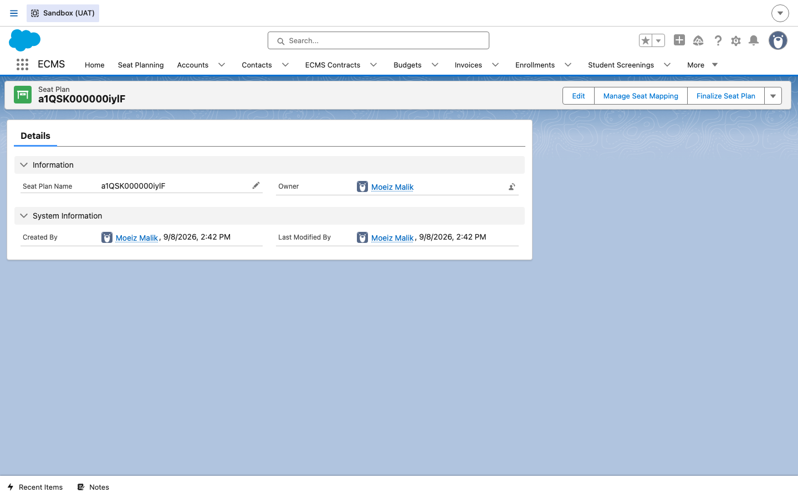
Per the BRD, a seat plan's Status moves through a defined lifecycle as the annual cycle progresses: New (just created) → Draft (editable, being built by the Portfolio team) → Finalized (validated, ready to publish) → Published (live as of July 1st, and downstream-consumable). The Finalize Seat Plan action visible above is how a Draft record is expected to move toward that Finalized/ Published state.
13Track Finalized and Published datasets
DO Back on the Seat Planning app page, scroll past Draft Seat Plans to the Finalized Seat Plans and Published Seat Plans list panels.
RESULT Both panels show the same Seat Plan Name / Fiscal Year / Status columns, filtered to their respective status. In this org both currently read 0 items — consistent with the FY2027 dataset still being in Draft and no prior fiscal year having gone through a full publish/archive cycle yet in this sandbox.
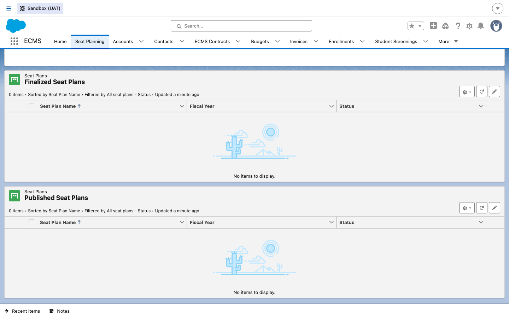
14What "drafting" the dataset covers
DO Understand what happens inside a Draft seat plan before you finalize or publish it — this guide's UAT record doesn't have populated seat/contract child data to screenshot, so this step summarizes the BRD's documented behavior instead of showing an empty related list.
RESULT Per BRD stories DOEECMS-2188 and DOEECMS-2189, drafting a new fiscal year's seat plan is meant to copy the current FY's seat counts and Cost-Per-Child values into an editable planning object, isolated from the live current-FY data until it's published. Portfolio Team Members and OA/ODs can then add, edit, and delete seat and contract data on that draft, collaboratively and incrementally, before an authorized user publishes it on or before July 1st — at which point it overwrites the live current dataset and the previously-published dataset is archived as a historical record for that prior fiscal year.
- Cost-Per-Child change history (DOEECMS-2186): every update to a Cost-Per-Child value creates a history record capturing the previous value, new value, timestamp, and the user who made the change — retained permanently and viewable in chronological order on the contract seat record. No history record is created if the value isn't actually changed.
- OA/OD notification on seat quantity updates (DOEECMS-2187): whenever a contracted seat quantity is updated — whether on the live current-FY record or on a Draft record inside the Seat Planning app — the site's assigned OA/OD is notified, so they can review and adjust the Cost-Per-Child if needed. The notification is expected to clearly state whether the update is for the current fiscal year or the next fiscal year (draft).
This is why Seat Planning exists as its own app rather than another related list: it's the single place the Portfolio team and OA/ODs collaborate on an entire upcoming FY's seats and contracts as one dataset, with its own status lifecycle, instead of editing individual Contract Seat records one at a time.